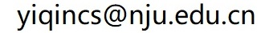

What：计算机程序设计（英语：Computer programming），或称程序设计（coding），是给程序解决出特定问题的过程，软件开发过程中的重要步骤。程序设计方法往往以某种程序设计语言为工具，给出这种语言下的程序。(from Wikipedia)
Who： 秦逸(南京大学仙林校区计算机科学与技术系楼501室；)
Where：鼓楼校区新教-107（理论课）/南园综合楼503（上机课）
When：每周周一5-6节（理论课)/7-8节（上机课），单周周三5-6节（理论课）
Which：《Python程序设计》，张莉主编，高等教育出版社，2022年第二版;《Python程序设计实验指导》，张莉、陶烨编，高等教育出版社，2022年第一版.
Why：程序设计是高效利用计算机的基础。Python语言是目前应用最为广泛的程序设计语言之一，其轻量级和易用性使得其成为数值计算和人工智能领域的主导性语言之一。
课程平时成绩占总成绩的40%，主要包括课后作业、期中小测和期末课程项目；期末考试成绩占总成绩的60%，形式为闭卷的上机测试。
平时成绩主要包括：1）课后作业（即上机实习课布置的编程题）；2）期中小测（会在学期中段进行，形式类似于期末考试，但是题量和难度会下降）；3）课程项目（团队形式，可以自由组队、自由选题）。其中课后作业主要根据提交情况给分，我们鼓励同学以功能正确的程序为目标提交自己的课后作业，但是考虑到不同同学的基础以及对于程序算法的掌握程度，因此在评定此部分分数的时候仅以同学们的提交记录为依据；期中小测则会根据提交解答的正确性给出百分制的评分；课程项目则会以随堂汇报答辩的形式进行，每个团队需要准备一个不超过5min的ppt，用于说明自己团队所完成项目的功能目标、主要程序结构以及团队分工与协作状况。
期末考试会在学期结束后进行，形式为闭卷上机试验，主要考察课程讲述的Python语言的基本使用方法，主要题型包括程序阅读题、程序填空题、程序改错题和编程题。
2025-10-13：第5章讲义上传。
2025-09-29：第一次作业发布。
2025-09-29：第3、4章讲义上传。
2025-09-16：课程规则和课后作业相关内容更新。
2025-09-12：第1、2章讲义上传。
2025-09-04：课程主页建立，散花。
一般上课前给出，但可能随时会更新，注意看更新时间，以确保自己下载的是最新版。